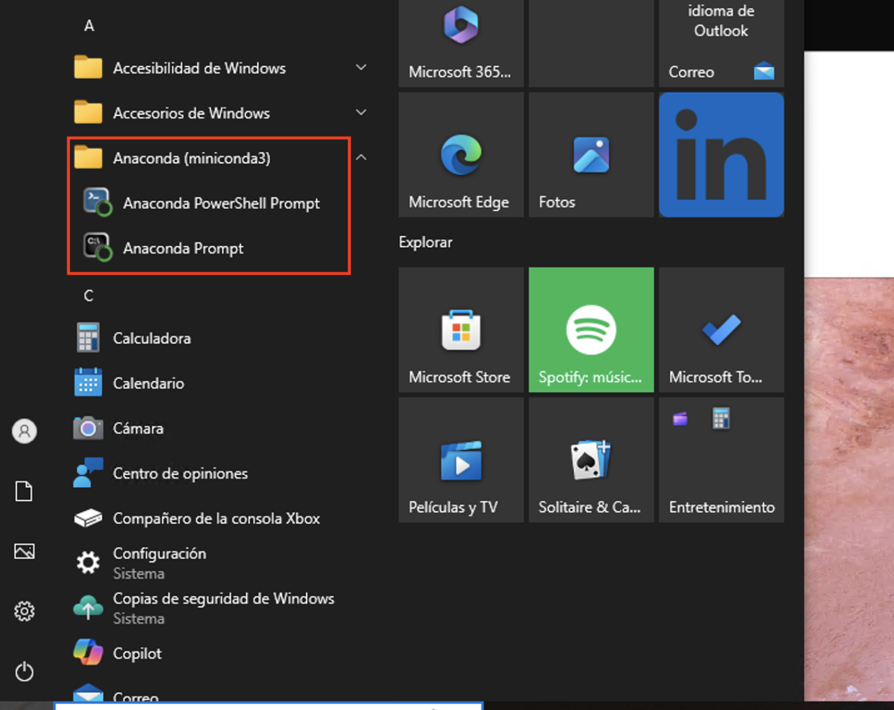
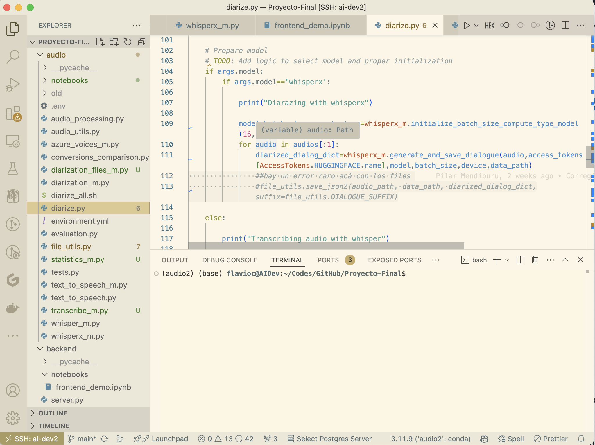
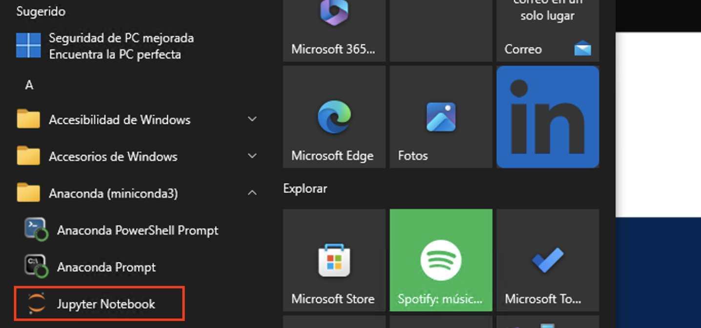
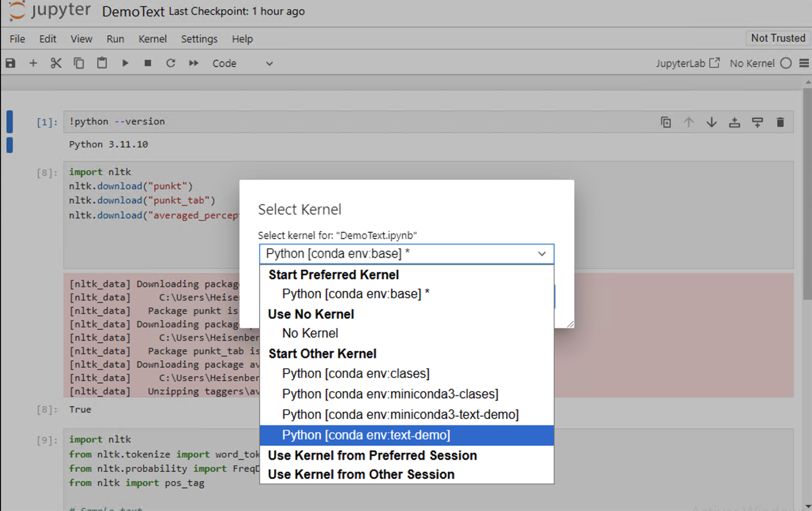

Clase 1: Introducción al lenguaje
Cómo empezar: Instalación y uso
Python es un lenguaje de programación interpretado, que se puede ejecutar sobre distintos sistemas operativos, es decir, es multiplataforma (suele usarse el término cross-platform). Además, la mayoría de los programas que existen (y posiblemente todos los que nosotros escribamos) pueden ejecutarse tanto en Linux como en windows y en Mac sin realizar ningún cambio.
Instalación
En este curso utilizaremos Python 3.
Nota: Existe una versión anterior de Python, Python2.X (Python 2) cuya fecha de finalización de soporte fue el 1/1/2020. Fue una una versión madura, estable, y con muchas aplicaciones, y utilidades disponibles, sin embargo ya no se desarrolla ni se corrigen los errores ni problemas de seguridad.
La instalación oficial de Python provee lo necesario para utilizar el lenguaje. Sin embargo, con el correr del tiempo, se han creado otras muchas distribuciones de Python que incluyen aplicaciones y bibliotecas de uso común.
Estas distribuciones son implementaciones del lenguaje basadas en CPython, es decir, en C y Python. Existen otras implementaciones, como por ejemplo PyPy.
Para una instalación fácil de Python y los paquetes más comunes se pueden usar alguna de las distribuciones:
En este curso utilizaremos Anaconda, en su versión minimalista, miniconda. La diferencia más importante es la cantidad de paquetes que instala cada distribución inicialmente. Además, Anaconda provee una aplicación (Anaconda Navigator) para el manejo de paquetes.
En el curso el manejo de paquetes se realizará mediante la línea de comando y los ambientes de Python.
Linux
En la terminal,
mkdir -p ~/miniconda3
wget https://repo.anaconda.com/miniconda/Miniconda3-latest-Linux-x86_64.sh -O ~/miniconda3/miniconda.sh
bash ~/miniconda3/miniconda.sh -b -u -p ~/miniconda3
rm ~/miniconda3/miniconda.sh
Eventualmente, en linux se podría instalar directamente todo lo necesario desde los repositorios. Por ejemplo en Ubuntu:
sudo apt-get install ipython3 ipython3-notebook spyder python3-matplotlib python3-numpy python3-scipy
o, en Fedora 28, en adelante:
sudo dnf install python3-ipython python3-notebook python3-matplotlib python3-numpy python3-scipy
Obviamente esto tiene un alcance global para todos los usuarios. Dependiendo de los casos de uso, será útil una u otra opción.
Windows
La instalación es bastante sencilla, bajando el instalador
acá o usando curl:
curl https://repo.anaconda.com/miniconda/Miniconda3-latest-Windows-x86_64.exe -o miniconda.exe
start /wait "" .\miniconda.exe /S
del miniconda.exe
Atención! Pueden existir problemas si el nombre del usuario en Windows contiene espacios.
Una vez instalado miniconda, veremos dos nuevos acceso directos en el menú
que corresponden a los dos tipos de terminales que instala miniconda.
Por defecto, miniconda no agrega Python al PATH, por lo tanto,
pythonno estará disponible en las terminales usuales (cmd.exey PowerShell)
Edición de código
Como todo lenguaje, se pueden utilizar distintos editores de texto
En Linux: cualquier editor de texto (gedit, geany, kate, nano, emacs, vim, …)
En Mac: TextEdit funciona, sino TextWrangler, JEdit, …
o IDEs:
Spyder. (IDE - También viene con Anaconda, y con Python(x,y)).
Pycharm. (IDE, una versión comercial y una libre, ambos con muchas funcionalidades)
Ninja-IDE (IDE cross-platform, libre)
y, por supuesto, Visual Studio Code. Todos estos editores ofrecen plugins o extensiones para mejorar la experiencia de programación.
Documentación y ayudas
Algunas fuentes de ayuda constante son:
En particular el Tutorial, también en español y la referencia de bibliotecas
En una terminal, puede obtener información sobre un paquete con
pydoc <comando>En una consola interactiva de Python, mediante
help(<comando>)La documentación de los paquetes:
Matplotlib, en particular la galería
etc.
Buscar “palabras clave + python” en un buscador. Es particularmente útil el sitio stackoverflow
Python es un lenguaje de tipos dinámicos, con lo cual las ayudas de los IDE pueden ser en general escasas. Veremos sin embargo en el curso algunas alternativas para poder mejorar la experiencia de programación.
Uso de Python: Interactivo o no
Interfaces interactivas (consolas/terminales, notebooks)
Hay muchas maneras de usar el lenguaje Python. Es un lenguaje
interpretado e interactivo. Si ejecutamos la consola
(cmd.exe en windows) y luego python, se abrirá la consola
interactiva

En la consola interactiva podemos escribir sentencias o pequeños bloques de código que son ejecutados inmediatamente. Pero la consola interactiva estándar no tiene tantas características de conveniencia como otras, por ejemplo IPython que viene con “accesorios de comfort”.

La consola IPython supera a la estándar en muchos sentidos. Podemos
autocompletar (<TAB>), ver ayuda rápida de cualquier objeto (?),
etc.
Programas/scripts
Una forma muy común/poderosa de usar Python es en forma no interactiva, escribiendo programas o scripts. Esto es, escribir nuestro código en un archivo con extensión .py para luego ejecutarlo con el intérprete. Por ejemplo, podemos crear un archivo hello.py (al que se le llama módulo) con este contenido:
print("Hola Mundo!")
Si ejecutamos python hello.py o ipython hello.py se ejecutará el
interprete Python y obtendremos el resultado esperado (impresión por
pantalla de “Hola Mundo!”, sin las comillas)
Python no exige un editor específico y hay muchos modos y maneras de programar. Lo que es importante al programar en Python es que la indentación define los bloques (definición de loops, if/else, funciones, clases, etc). Por esa razón es importante que el tabulado no mezcle espacios con caracteres específicos de tabulación. La manera que recomendaría es usar siempre espacios (uno usa la tecla [TAB] pero el editor lo traduce a un número determinado de espacios). La indentación recomendada es de 4 espacios (pero van a notar que yo uso 2).
Un buen editor es Spyder que tiene características de IDE (entorno integrado: editor + ayuda + consola interactiva).

También Pycharm funciona muy bien

Y por supuesto, VS Code
En todos los casos se puede ejecutar todo el código del archivo en la consola interactiva que incluye. Alternativamente, también se puede seleccionar sólo una porción del código para ejecutar.
Notebooks de Jupyter o Jupyter-Lab
Para trabajar en forma interactiva es muy útil usar los Notebooks de Jupyter. El notebook es un entorno interactivo enriquecido. Podemos crear y editar “celdas” código Python que se pueden editar y volver a ejecutar, se pueden intercalar celdas de texto, fórmulas matemáticas, y hacer que los gráficos se muestren inscrutados en la misma pantalla o en ventanas separadas. Además se puede escribir texto con formato (como este que estamos viendo) con secciones, títulos. Estos archivos se guardan con extensión .ipynb, que pueden exportarse en distintos formatos tales como html (estáticos), en formato PDF, LaTeX, o como código python puro. (.py)
Instalando Python interactivo
Miniconda instala algunos paquetes básicos, con lo cual tenemos que ir
agregándolos. Primero instalaremos IPython, la consola interactiva
de Python. Para eso utilizamos el comando conda. Desde cualquiera de
las terminales de Anaconda instaladas:
conda install ipython
Y luego instalaremos la versión más sofisticada de Python interactivo, a través de Jupyter:
conda install jupyter
Y obtendremos
Para usar los notebooks, simplemente cliqueamos en el nuevo acceso directo a Jupyter Notebooks, o desde la terminal de Anaconda:
python -m notebook
Existe una versión más moderna de Jupyter notebooks denominada JupyterLab que puede instalarse como:
conda install -c conda-forge jupyterlab
Una vez instalada, podemos correrla con
jupyter lab
desde una terminal de Anaconda.
Comandos de Jupyter (o IPython)
Algunos de los comandos mágicos
Algunos de los comandos mágicos más importantes son:
%cddirect (Nos ubica en la carpeta direct)%ls(muestra un listado del directorio)%pwd(muestra el directorio donde estamos trabajando)%runfilename (corre un dado programa)%hist(muestra la historia de comandos utilizados)%mkdirdname (crea un directorio llamado dname)Tab completion: Apretando [TAB] completa los comandos o nombres de archivos.
En la consola de IPython tipee %cd ~ (i.e. “%cd” – “espacio” –
“tilde”, y luego presione [RETURN]. Esto nos pone en el directorio HOME
(default).
Después tipee %pwd (print working directory) y presione [RETURN]
para ver en qué directorio estamos:
%pwd
'/Users/flavioc/Library/Mobile Documents/com~apple~CloudDocs/Documents/cursos/curso-python-y-datos/clases'
%cd ~
/Users/flavioc
%pwd
'/Users/flavioc'
En windows, el comando pwd va a dar algo así como:
In [3]: %pwd
Out[3]: C:\\Users\\usuario
Vamos a crear un directorio donde guardar ahora los programas de ejemplo
que escribamos. Lo vamos a llamar scripts.
Primero vamos a ir al directorio que queremos, y crearlo. En mi caso lo voy a crear en mi HOME.
%cd
/Users/flavioc
%mkdir scripts
%cd scripts
%hist
%pwd
%cd ~
%pwd
%cd
!type prog1.py
%magic
%hist
Hay varios otros comandos mágicos en IPython. Para leer información sobre el sistema de comandos mágicos utilice:
Finalmente, para obtener un resumen de comandos con una explicación breve, utilice:
%quickref
IPython -- An enhanced Interactive Python - Quick Reference Card
================================================================
obj?, obj?? : Get help, or more help for object (also works as
?obj, ??obj).
?foo.*abc* : List names in 'foo' containing 'abc' in them.
%magic : Information about IPython's 'magic' % functions.
Magic functions are prefixed by % or %%, and typically take their arguments
without parentheses, quotes or even commas for convenience. Line magics take a
single % and cell magics are prefixed with two %%.
Example magic function calls:
%alias d ls -F : 'd' is now an alias for 'ls -F'
alias d ls -F : Works if 'alias' not a python name
alist = %alias : Get list of aliases to 'alist'
cd /usr/share : Obvious. cd -<tab> to choose from visited dirs.
%cd?? : See help AND source for magic %cd
%timeit x=10 : time the 'x=10' statement with high precision.
%%timeit x=2**100
x**100 : time 'x**100' with a setup of 'x=2**100'; setup code is not
counted. This is an example of a cell magic.
System commands:
!cp a.txt b/ : System command escape, calls os.system()
cp a.txt b/ : after %rehashx, most system commands work without !
cp ${f}.txt $bar : Variable expansion in magics and system commands
files = !ls /usr : Capture system command output
files.s, files.l, files.n: "a b c", ['a','b','c'], 'anbnc'
History:
_i, _ii, _iii : Previous, next previous, next next previous input
_i4, _ih[2:5] : Input history line 4, lines 2-4
exec(_i81) : Execute input history line #81 again
%rep 81 : Edit input history line #81
_, __, ___ : previous, next previous, next next previous output
_dh : Directory history
_oh : Output history
%hist : Command history of current session.
%hist -g foo : Search command history of (almost) all sessions for 'foo'.
%hist -g : Command history of (almost) all sessions.
%hist 1/2-8 : Command history containing lines 2-8 of session 1.
%hist 1/ ~2/ : Command history of session 1 and 2 sessions before current.
%hist ~8/1-~6/5 : Command history from line 1 of 8 sessions ago to
line 5 of 6 sessions ago.
%edit 0/ : Open editor to execute code with history of current session.
Autocall:
f 1,2 : f(1,2) # Off by default, enable with %autocall magic.
/f 1,2 : f(1,2) (forced autoparen)
,f 1 2 : f("1","2")
;f 1 2 : f("1 2")
Remember: TAB completion works in many contexts, not just file names
or python names.
The following magic functions are currently available:
%alias:
Define an alias for a system command.
%alias_magic:
::
%autoawait:
%autocall:
Make functions callable without having to type parentheses.
%automagic:
Make magic functions callable without having to type the initial %.
%autosave:
Set the autosave interval in the notebook (in seconds).
%bookmark:
Manage IPython's bookmark system.
%cat:
Alias for !cat
%cd:
Change the current working directory.
%clear:
Clear the terminal.
%code_wrap:
::
%colors:
Switch color scheme for prompts, info system and exception handlers.
%conda:
Run the conda package manager within the current kernel.
%config:
configure IPython
%connect_info:
Print information for connecting other clients to this kernel
%cp:
Alias for !cp
%debug:
::
%dhist:
Print your history of visited directories.
%dirs:
Return the current directory stack.
%doctest_mode:
Toggle doctest mode on and off.
%ed:
Alias for %edit.
%edit:
Bring up an editor and execute the resulting code.
%env:
Get, set, or list environment variables.
%gui:
Enable or disable IPython GUI event loop integration.
%hist:
Alias for %history.
%history:
::
%killbgscripts:
Kill all BG processes started by %%script and its family.
%ldir:
Alias for !ls -F -G -l %l | grep /$
%less:
Show a file through the pager.
%lf:
Alias for !ls -F -l -G %l | grep ^-
%lk:
Alias for !ls -F -l -G %l | grep ^l
%ll:
Alias for !ls -F -l -G
%load:
Load code into the current frontend.
%load_ext:
Load an IPython extension by its module name.
%loadpy:
Alias of %load
%logoff:
Temporarily stop logging.
%logon:
Restart logging.
%logstart:
Start logging anywhere in a session.
%logstate:
Print the status of the logging system.
%logstop:
Fully stop logging and close log file.
%ls:
Alias for !ls -F -G
%lsmagic:
List currently available magic functions.
%lx:
Alias for !ls -F -l -G %l | grep ^-..x
%macro:
Define a macro for future re-execution. It accepts ranges of history,
%magic:
Print information about the magic function system.
%mamba:
Run the mamba package manager within the current kernel.
%man:
Find the man page for the given command and display in pager.
%matplotlib:
::
%micromamba:
Run the conda package manager within the current kernel.
%mkdir:
Alias for !mkdir
%more:
Show a file through the pager.
%mv:
Alias for !mv
%notebook:
::
%page:
Pretty print the object and display it through a pager.
%pastebin:
Upload code to dpaste.com, returning the URL.
%pdb:
Control the automatic calling of the pdb interactive debugger.
%pdef:
Print the call signature for any callable object.
%pdoc:
Print the docstring for an object.
%pfile:
Print (or run through pager) the file where an object is defined.
%pinfo:
Provide detailed information about an object.
%pinfo2:
Provide extra detailed information about an object.
%pip:
Run the pip package manager within the current kernel.
%popd:
Change to directory popped off the top of the stack.
%pprint:
Toggle pretty printing on/off.
%precision:
Set floating point precision for pretty printing.
%prun:
Run a statement through the python code profiler.
%psearch:
Search for object in namespaces by wildcard.
%psource:
Print (or run through pager) the source code for an object.
%pushd:
Place the current dir on stack and change directory.
%pwd:
Return the current working directory path.
%pycat:
Show a syntax-highlighted file through a pager.
%pylab:
::
%qtconsole:
Open a qtconsole connected to this kernel.
%quickref:
Show a quick reference sheet
%recall:
Repeat a command, or get command to input line for editing.
%rehashx:
Update the alias table with all executable files in $PATH.
%reload_ext:
Reload an IPython extension by its module name.
%rep:
Alias for %recall.
%rerun:
Re-run previous input
%reset:
Resets the namespace by removing all names defined by the user, if
%reset_selective:
Resets the namespace by removing names defined by the user.
%rm:
Alias for !rm
%rmdir:
Alias for !rmdir
%run:
Run the named file inside IPython as a program.
%save:
Save a set of lines or a macro to a given filename.
%sc:
Shell capture - run shell command and capture output (DEPRECATED use !).
%set_env:
Set environment variables. Assumptions are that either "val" is a
%store:
Lightweight persistence for python variables.
%sx:
Shell execute - run shell command and capture output (!! is short-hand).
%system:
Shell execute - run shell command and capture output (!! is short-hand).
%tb:
Print the last traceback.
%time:
Time execution of a Python statement or expression.
%timeit:
Time execution of a Python statement or expression
%unalias:
Remove an alias
%unload_ext:
Unload an IPython extension by its module name.
%who:
Print all interactive variables, with some minimal formatting.
%who_ls:
Return a sorted list of all interactive variables.
%whos:
Like %who, but gives some extra information about each variable.
%xdel:
Delete a variable, trying to clear it from anywhere that
%xmode:
Switch modes for the exception handlers.
%%!:
Shell execute - run shell command and capture output (!! is short-hand).
%%HTML:
Alias for %%html.
%%SVG:
Alias for %%svg.
%%bash:
%%bash script magic
%%capture:
::
%%code_wrap:
::
%%debug:
::
%%file:
Alias for %%writefile.
%%html:
::
%%javascript:
Run the cell block of Javascript code
%%js:
Run the cell block of Javascript code
%%latex:
Render the cell as a block of LaTeX
%%markdown:
Render the cell as Markdown text block
%%perl:
%%perl script magic
%%prun:
Run a statement through the python code profiler.
%%pypy:
%%pypy script magic
%%python:
%%python script magic
%%python2:
%%python2 script magic
%%python3:
%%python3 script magic
%%ruby:
%%ruby script magic
%%script:
::
%%sh:
%%sh script magic
%%svg:
Render the cell as an SVG literal
%%sx:
Shell execute - run shell command and capture output (!! is short-hand).
%%system:
Shell execute - run shell command and capture output (!! is short-hand).
%%time:
Time execution of a Python statement or expression.
%%timeit:
Time execution of a Python statement or expression
%%writefile:
::
Comandos de Shell
Se pueden correr comandos del sistema operativo tipeando ! seguido
por el comando que se quiere ejecutar. Por ejemplo:
# En Linux
# !ls
# En Windows
!dir
Vamos a escribir un programa de Python con comandos:
!echo "1+2" >> prog1.py
!echo "print('hola otra vez')" >> prog1.py
Notar que en Windows, el comando no requiere las comillas (“):
::
!echo 1+2 >> prog1.py
!echo print('hola otra vez') >> prog1.py
# En Windows
!echo 1+2 >> prog1.py
!echo print('hola otra vez') >> prog1.py
%cat prog1.py
En windows ``%cat`` no está implementado, así que se debe usar
directamente el comando de la terminal ``!type``
!type prog1.py
prog1.py not found
%run prog1.py
!date
En windows, ``!date`` imprime la fecha y hora, pero espera una nueva
fecha, con lo cual la ejecución del comando terminará cuando uno
detenga la ejecución de la celda
Ejercicios 01 (a)
Abra una terminal (consola) o notebook y utilícela como una calculadora para realizar las siguientes acciones:
Suponiendo que, de las tres horas de clases, dedicamos dos períodos de media hora para que realicen ejercicios (de Python), dedicamos diez minutos a distraernos en un recreo, y el resto a la exposición ‘teórica’, calcular cuántos minutos efectivos de trabajo tendremos en las 13 clases.
Calcule el porcentaje de horas del curso efectivamente dedicadas al trabajo.
¿Cómo se modifica el porcentaje anterior si incluimos el examen final?
Para la cantidad de alumnos presentes en el aula: ¿cuántas horas-persona de trabajo hay involucradas en este curso?
Muestre en la consola de Ipython (o usando Jupyter Notebooks):
el nombre de su directorio actual
los archivos en su directorio actual
Cree un subdirectorio llamado
tmpsi está usando Linux, muestre la fecha y hora
Borre el subdirectorio
tmp
Sabiendo que la velocidad de la luz es aproximadamente 300000 km/s y que un año luz se define como la distancia que recorre la luz en un año, usando la terminal de python o la notebook:
calcule cuántos kilómetros son nueve meses-luz,
considerando que la luz del sol tarda ocho minutos en llegar a la tierra, calcule a cuántos metros de la tierra está el sol.
Ambientes
Uno de los problemas principales de cualquier proyecto de software es el mantenimiento de las dependencias del código. Python no es ajeno a ello. En Python las bibliotecas de software se distribuyen a través de paquetes. Cada paquete tiene su nombre y su versión.
La manera tradicional de encapsular dependencias en proyectos que tiene Python es a través de la creación de ambientes virtuales o virtual environments. De esta forma, un conjunto de paquetes se instalan en forma local en un directorio aislado de otros, en lugar de ser instalado en forma global. De esa forma, determinados proyectos acudirán a cierto environment, mientras otros usarán otros… Por ejemplo, un proyecto de Machine Learning requerirá de ciertos paquetes de manejo de Álgebra Lineal, optimización en GPU, etc., mientras que un server web no necesitará de ellos.
Para manejar ambientes se usan ciertas herramientas equivalentes como:
La distribución Anaconda a través del comando conda también puede
administrar environments, y es la que usaremos en este curso.
Gestionando ambientes con conda
Empecemos viendo qué ambientes tenemos en nuestro sistema con:
conda env list
Si recién hemos instalado Python con miniconda, obtendremos:
(base) C:\Users\Heisenberg>conda env list
# conda environments:
#
base * C:\Users\Heisenberg\miniconda3
Vemos que existe un ambiente default que se llama base, que también
es el indicado entre paréntesis en el prompt. Este ambiente se crea al
instalar Python a través de miniconda.
El comando
condatiene ayudas instructivas, basta agregar--helpal final del comando
Creando ambientes
El comando para crear un nuevo ambiente es
conda create -n <nombre_del_ambiente>:
conda create -n clases
Channels:
- defaults
Platform: win-64
Collecting package metadata (repodata.json): done
Solving environment: done
## Package Plan ##
environment location: C:\Users\Heisenberg\miniconda3\envs\clases
Proceed ([y]/n)? y
Preparing transaction: done
Verifying transaction: done
Executing transaction: done
#
# To activate this environment, use
#
# $ conda activate clases
#
# To deactivate an active environment, use
#
# $ conda deactivate
El resultado de la ejecución del comando nos indica cómo activar y desactivar el ambiente. ¿Qué significa esto? Para poder trabajar ordenadamente en un proyecto, activamos primero el ambiente, instalamos los paquetes requeridos, programamos, etc. etc., y luego desactivamos el ambiente. Por supuesto que la instalación de paquetes en un ambiente se hace una única vez.
conda activate clases
Nótese que el prompt cambia indicando bajo qué ambiente estamos trabajando. En efecto:
(clases) C:\Users\Heisenberg>conda env list
# conda environments:
#
base C:\Users\Heisenberg\miniconda3
clases * C:\Users\Heisenberg\miniconda3\envs\clases
Nos indica que hay un nuevo ambiente creado, y es el que está activo (indicado por el asterisco).
Para borrar un ambiente, usamos
conda env remove --name <nombre_del_ambiente>
Recordar desactivar el ambiente antes de borrarlo. De todas formas,
condaavisará si uno se olvida de este paso
conda deactivate
conda env remove --name clases
Más documentación y opciones por acá.
Instalando paquetes
Por defecto conda create -n <nombre_del_ambiente> no instala ningún
paquete, con lo cual, tenemos que empezar instalando Python:
Recordar que estamos instalando paquetes dentro del ambiente, así que hay que asegurarse que hayamos hecho
conda activate <nombre_del_ambiente>
conda install python=3.11.4
Instalará la versión 3.11.4 de Python. La sintaxis es en general
conda install <nombre_del_paquete_1>[=<versión>] <nombre_del_paquete_2>[=<versión>] ...
Es optativo especificar la versión del paquete, por defecto conda
usará la versión más nueva (compatible con el resto de los paquetes que
se están instalando o están instalados en el ambiente).
Ahora sí, podemos usar python
python --version
Python 3.11.3
Para ver qué paquetes están instalados, hacemos conda list
Ambientes y Notebooks
Una vez que creamos un ambiente y le agregamos paquetes, nos gustaría utilizarlo desde un jupyter notebook. Hay algunas opciones
Instalando jupyter
Una opción es instalar jupyter en cada ambiente, activarlo y
correrlo via python -m notebook como hicimos al comienzo en el
ambiente base. Si se prefiere, también se puede instalar jupyter labs
con conda install -c conda-forge jupyterlab y luego correr
jupyter lab desde la terminal. En este caso tendremos un nuevo
jupyter en el menú de windows
Instalando nb_conda_kernels
Jupyter es una plataforma poderosa y permite utilizar otros kernels.
Un kernel de Jupyter es un proceso que corre paralelamente al notebook,
y se ocupa de la ejecución del código. Si bien lo usaremos en Python,
Jupyter puede usar otros kernels en distintos
lenguajes.
El paquete ipykernel es el que encapsula a IPython (la consola
interactiva) para que pueda usarse desde jupyter, y se instala como
dependencia del paquete jupyter.
El paquete nb_conda_kernels permite que cualquier notebook pueda
ejecutarse con distintos ambientes (más documentación
acá).
Atención!
ipykerneltiene que estar instalado en cada ambiente que se quiera utilizar con esta opción.
En resumen: - Si se quiere usar notebooks con un ambiente dedicado,
instalar jupyter en cada ambiente. - Si se desea usar notebooks con
distintos ambientes, instalar ipykernel en cada ambiente y
nb_conda_kernels en el ambiente desde el cual se correrá jupyter (en
general, es el default base)
Visual Studio Code
VS Code maneja esto automáticamente, instalando ipykernel en cada
ambiente de ser necesario, y realizando todas las conexiones necesarias
para que uno pueda tener disponibles todos los ambientes al abrir un
notebook.
Compartiendo ambientes
La forma más sencilla es crear un archivo con la lista de paquetes del ambiente local que estamos usando, compartir dicho archivo y recrear el ambiente en la nueva locación. Extrayendo el ambiente local
conda env export --from-history > environment.yml
Resulta en un archivo YAML de la forma:
name: clases
channels:
- defaults
dependencies:
- ipykernel
- mypy
- jupyter
Esta es la forma más general de exportar los paquetes. Obsérvese que
están incluídos aquellos paquetes que hemos instalado explícitamente con
conda.
Se estila usar como nombre de archivo
environment.yml, pero se puede usar cualquier otro nombre de base,
Existen otras maneras más específicas de crear archivos que contengan el listado de paquetes instalados, pero adolecen de algunos problemas, como por ejemplo, no son multiplataforma.
Una vez copiado el archivo yaml en la nueva máquina/usuario/etc., procedemos a crear el ambiente con
conda env create -n clases2 --file environment.yml
donde en este caso environment.yml es el archivo que creamos antes,
y clases2 sería el nombre del nuevo ambiente.
Conceptos básicos de Python
Características generales del lenguaje
Python es un lenguaje de uso general que presenta características modernas. Posiblemente su característica más visible/notable es que la estructuración del código está fuertemente relacionada con su legibilidad:
Las funciones, bloques, ámbitos están definidos por la indentación
Es un lenguaje interpretado (no se compila separadamente)
Provee tanto un entorno interactivo como ejecución de programas completos
Tiene una estructura altamente modular, permitiendo su reusabilidad
Es un lenguaje de tipeado dinámico, no tenemos que declarar el tipo de variable antes de usarla.
Python es un lenguaje altamente modular con una biblioteca standard que provee funciones y tipos para un amplio rango de aplicaciones, y que se distribuye junto con el lenguaje. Además hay un conjunto muy importante de utilidades que pueden instalarse e incorporarse muy fácilmente. El núcleo del lenguaje es pequeño, existiendo sólo unas pocas palabras reservadas:
Las |
Palabras |
claves |
del |
Lenguaje |
|---|---|---|---|---|
False |
class |
finally |
is |
return |
None |
continue |
for |
lambda |
try |
True |
def |
from |
nonlocal |
while |
and |
del |
global |
not |
with |
as |
elif |
if |
or |
yield |
assert |
else |
import |
pass |
|
break |
except |
in |
raise |
Tipos de variables
Python es un lenguaje de muy alto nivel y por lo tanto trae muchos tipos de datos ya definidos:
Números: enteros, reales, complejos
Tipos lógicos (booleanos)
Cadenas de caracteres (strings) y bytes
Listas: una lista es una colección de cosas, ordenadas, que pueden ser todas distintas entre sí
Diccionarios: También son colecciones de cosas, pero no están ordenadas y son identificadas con una etiqueta
Conjuntos, tuples, …
Tipos simples: Números
Hay varios tipos de números en Python. Veamos un ejemplo donde definimos y asignamos valor a distintas variables:
a = 13
b = 1.23
c = a + b
print(a, type(a))
print(b, type(b))
print(c, type(c))
Acá usamos la función type() que retorna el tipo de su argumento.
Acá ilustramos una de las características salientes de Python: El tipo
de variable se define en forma dinámica, al asignarle un valor.
De la misma manera se cambia el tipo de una variable en forma dinámica,
para poder operar. Por ejemplo en el último caso, la variable a es
de tipo int, pero para poder sumarla con la variable b debe
convertirse su valor a otra de tipo float.
print (a, type(a))
a = 1.5 * a
print (a, type(a))
Ahora, la variable a es del tipo float.
Lo que está pasando acá en realidad es que la variable a del tipo
entero en la primera, en la segunda línea se destruye (después de ser
multiplicada por 1.5) y se crea una nueva variable del tipo
float que se llama a a la que se le asigna el valor real.
En Python 3 la división entre números enteros da como resultado un número de punto flotante
print(20/5)
print(type(20/5))
print(20/3)
Advertencia
En Python 2.x la división entre números enteros es entera
Por ejemplo, en cualquier versión de Python 2 tendremos: 1/2 = 3/4 = 0. Esto es diferente en Python 3 donde 1/2=0.5 y 3/4=0.75.
Nota
La función print
Estuvimos usando, sin hacer ningún comentario, la función
print(arg1, arg2, arg3, ..., sep=' ', end='\n', file=sys.stdout, flush=False)que acepta un número variable de argumentos. Esta función Imprime por pantalla todos los argumentos que se le pasan separados por el string
sep(cuyo valor por defecto es un espacio), y termina con el stringend(con valor por defecto newline).
help(print)
Help on built-in function print in module builtins: print(*args, sep=' ', end='n', file=None, flush=False) Prints the values to a stream, or to sys.stdout by default. sep string inserted between values, default a space. end string appended after the last value, default a newline. file a file-like object (stream); defaults to the current sys.stdout. flush whether to forcibly flush the stream.
print(3,2,'hola')
print(4,1,'chau')
3 2 hola
4 1 chau
print(3,2,'hola',sep='++++',end=' -> ')
print(4,1,'chau',sep='++++')
3++++2++++hola -> 4++++1++++chau
Advertencia
En Python 2.x no existe la función print(). Se
trata de un comando. Para escribir las sentencias anteriores en
Python 2 sólo debemos omitir los paréntesis y separar la palabra
print de sus argumentos con un espacio.
Nota
Disgresión: Objetos
En python, la forma de tratar datos es mediante objetos. Todos los objetos tienen, al menos:
un tipo,
un valor,
una identidad.
Además, pueden tener:
componentes
métodos
Los métodos son funciones que pertenecen a un objeto y cuyo primer argumento es el objeto que la posee.
Todos los números, al igual que otros tipos, son objetos y tienen definidos algunos métodos que pueden ser útiles.
Números complejos
Los números complejos son parte standard del lenguaje, y las operaciones básicas que están incorporadas en forma nativa pueden utilizarse normalmente
z1 = 3 + 1j
z2 = 2 + 2.124j
print ('z1 =', z1, ', z2 =', z2)
z1 = (3+1j) , z2 = (2+2.124j)
print('1.5j * z2 + z1 = ', 1.5j * z2 + z1) # sumas, multiplicaciones de números complejos
print('z2² = ', z2**2) # potencia de números complejos
print('conj(z1) = ', z1.conjugate())
1.5j * z2 + z1 = (-0.18599999999999994+4j)
z2² = (-0.5113760000000003+8.496j)
conj(z1) = (3-1j)
print ('Im(z1) = ', z1.imag)
print ('Re(z1) = ', z1.real)
print ('abs(z1) = ', abs(z1))
type(z1)
help(z1)
Operaciones
Las operaciones aritméticas básicas son:
adición:
+sustracción:
-multiplicación:
*división:
/potencia:
**módulo:
%división entera:
//
Las operaciones se pueden agrupar con parentesis y tienen precedencia estándar.
División entera (//) significa quedarse con la parte entera de la división (sin redondear).
Nota: Las operaciones matemáticas están incluidas en el lenguaje. En particular las funciones elementales: trigonométricas, hiperbólicas, logaritmos no están incluidas. En todos los casos es fácil utilizarlas porque las proveen módulos. Lo veremos pronto.
print('división de 20/3: ', 20/3)
print('parte entera de 20/3: ', 20//3)
print('fracción restante de 20/3:', 20/3 - 20//3)
print('Resto de 20/3: ', 20%3)
división de 20/3: 6.666666666666667
parte entera de 20/3: 6
fracción restante de 20/3: 0.666666666666667
Resto de 20/3: 2
Tipos simples: Booleanos
Los tipos lógicos o booleanos, pueden tomar los valores Verdadero o
Falso (True o False)
t = False
print('¿t is True?', t == True)
print('¿t is False?', t == False)
¿t is True? False
¿t is False? True
c = (t == True)
print('¿t is True?', c)
print (type(c))
¿t is True? False
<class 'bool'>
Hay un tipo especial, el elemento None.
print ('True == None: ',True == None)
print ('False == None: ', False == None)
a = None
print ('type(a): ',type(a))
print (bool(None))
print(bool(0))
print(bool(1))
True == None: False
False == None: False
type(a): <class 'NoneType'>
False
False
True
Aquí hemos estado preguntando si dos cosas eran iguales o no (igualdad). También podemos preguntar si una es la otra (identidad):
a = 1280
b = 1280
print(a == b)
print ('b is a: ', b is a)
True
b is a: False
a = None
b = True
c = a
print ('b is True: ', b is True)
print ('a is None: ', a is None)
print ('c is a: ', c is a)
b is True: True
a is None: True
c is a: True
Acá vemos que None es “único”, en el sentido de que si dos variables
son None, entonces son el mismo objeto.
Operadores lógicos
Los operadores lógicos en Python son muy explicitos:
A == B (A igual que B)
A > B (A mayor que B)
A < B (A menor que B)
A >= B (A igual o mayor que B)
A <= B (A igual o menor que B)
A != B (A diferente que B)
A in B (A incluido en B)
A is B (Identidad: A es el mismo elemento que B)
y a todos los podemos combinar con not, que niega la condición.
Veamos algunos ejemplos
print ('¿20/3 == 6?',20/3 == 6)
print ('¿20//3 == 6?', 20//3 == 6)
print ('¿20//3 >= 6?', 20//3 >= 6)
print ('¿20//3 > 6?', 20//3 > 6)
¿20/3 == 6? False
¿20//3 == 6? True
¿20//3 >= 6? True
¿20//3 > 6? False
a = 1001
b = 1001
print ('a == b:', a == b)
print ('a is b:',a is b)
print ('a is not b:',a is not b)
a == b: True
a is b: False
a is not b: True
Note que en las últimas dos líneas estamos fijándonos si las dos variables son la misma (identidad), y no ocurre aunque vemos que sus valores son iguales.
Warning: En algunos casos Python puede reusar un lugar de memoria.
Por razones de optimización, en algunos casos Python puede utilizar el mismo lugar de memoria para dos variables que tienen el mismo valor, cuando este es pequeño.
a = 10
b = 5
print (a, ': a is b:', a is b)
10 : a is b: False
Este es un detalle de implementación y nuestros programas no deberían depender de este comportamiento.
b = 2*b
print(a, b, a is b)
10 10 True
Acá utilizó otro lugar de memoria para guardar el nuevo valor de b
(22).
Esto sigue valiendo para otros números:
a = -5
b = -5
print (a, ': a is b:', a is b)
print(type(a))
-5 : a is b: True
<class 'int'>
a = 257
b = 257
print (a, ': a is b:', a is b)
257 : a is b: False
En la implementación que estamos usando, se utiliza el mismo lugar de
memoria para dos números enteros iguales si son menores o iguales a 256.
De todas maneras, es claro que deberíamos utilizar el símbolo ==
para probar igualdad y la palabra is para probar identidad.
En este caso, para valores mayores que 256, ya no usa el mismo lugar de memoria. Tampoco lo hace para números de punto flotante.
a = -6
b = -6
print (a, ': a is b:', a is b)
print(type(a))
-6 : a is b: False
<class 'int'>
a = 1.5
b = 1.5
print (a, ': a is b:', a is b)
print(type(a))
1.5 : a is b: False
<class 'float'>
a = 0.
b = 0.
a is b
False
Ejercicios 01 (b)
Para cubos de lados de longitud L = 1, 3, y 5: calcule su superficie y su volumen.
Para esferas de radios r = 1, 3, 5 y 8, calcule su superficie y su volumen.
Fíjese si alguno de los valores: \(x_1=0.49\), \(x_2=0.50\), \(x_3=0.51\) es un cero de la función \(f(x)=x^{2} + x/2 - 1/2\), esto es \(f(x_i)=0\) para \(i=1,2\) o \(3\) .
Para el número complejo \(z= 1 + 0.5\ i\)
Calcular \(z^2\) y \(z^5\).
Calcular los complejos conjugados de \(z\) y \(z^3\).
Escribir un programa que escriba las frases:
“El conjugado de z=1+0.5i es 1-0.5j”
“El conjugado de z=(1+0.5i)^2 es …” (con el valor correspondiente)
.